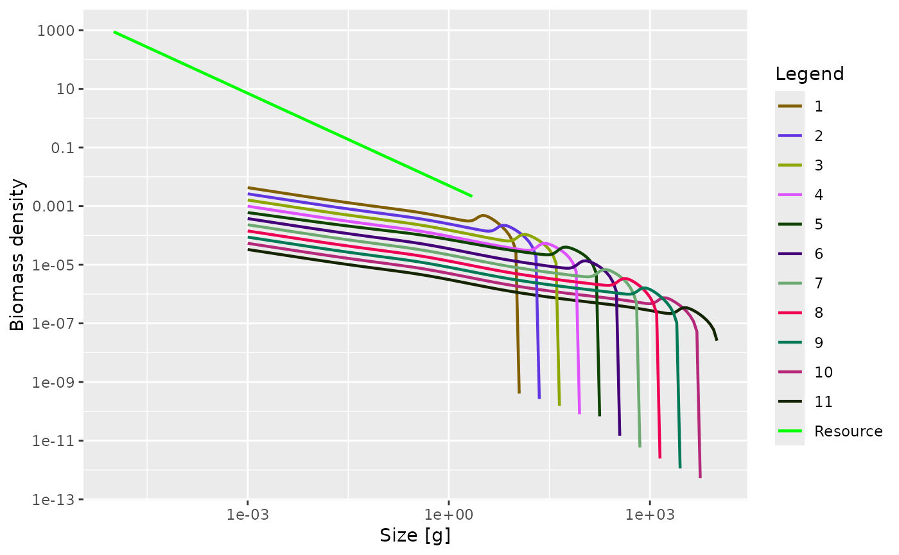

The steady state is found by running the dynamics while keeping reproduction,
resource and other components constant until the size spectra no longer
change much (or until time t_max is reached, if earlier).
Usage
steady(
params,
t_max = 100,
t_per = 1.5,
dt = 0.1,
tol = 0.1 * dt,
return_sim = FALSE,
preserve = c("reproduction_level", "erepro", "R_max"),
progress_bar = TRUE
)Arguments
- params
A MizerParams object
- t_max
The maximum number of years to run the simulation. Default is 100.
- t_per
The simulation is broken up into shorter runs of
t_peryears, after each of which we check for convergence. Default value is 1.5. This should be chosen as an odd multiple of the timestepdtin order to be able to detect period 2 cycles.- dt
The time step to use in
project().- tol
The simulation stops when the relative change in the egg production RDI over
t_peryears is less thantolfor every species.- return_sim
If TRUE, the function returns the MizerSim object holding the result of the simulation run, saved at intervals of
t_per. If FALSE (default) the function returns a MizerParams object with the "initial" slots set to the steady state.- preserve
![[Experimental]](figures/lifecycle-experimental.svg) Specifies whether the
Specifies whether the reproduction_levelshould be preserved (default) or the maximum reproduction rateR_maxor the reproductive efficiencyerepro. SeesetBevertonHolt()for an explanation of thereproduction_level.- progress_bar
A shiny progress object to implement a progress bar in a shiny app. Default FALSE.
Details
If the model use Beverton-Holt reproduction then the reproduction parameters
are set to values that give the level of reproduction observed in that
steady state. The preserve argument can be used to specify which of the
reproduction parameters should be preserved.
Examples
# \donttest{
params <- newTraitParams()
species_params(params)$gamma[5] <- 3000
params <- steady(params)
#> Convergence was achieved in 12 years.
plotSpectra(params)

# }